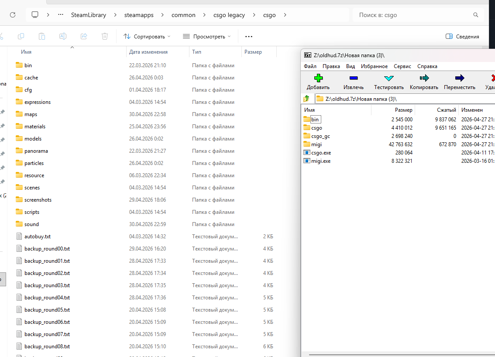
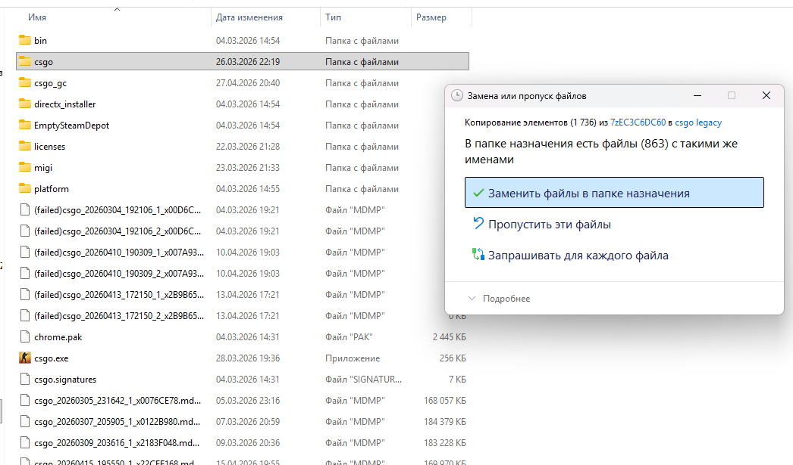
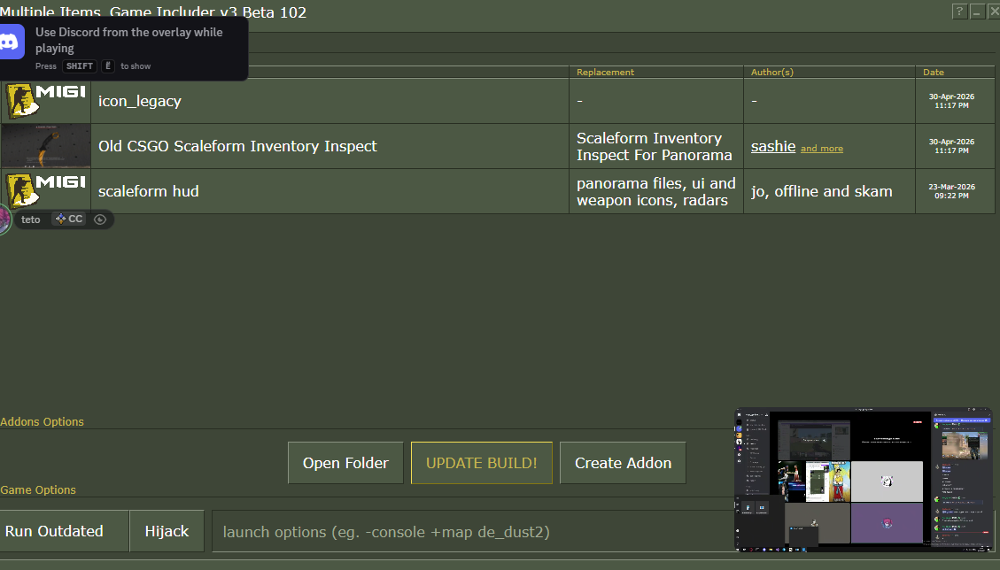
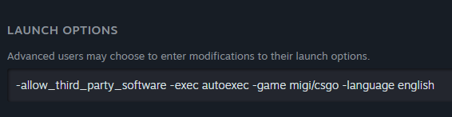

Home
MIGI — это мощный инструмент для объединения модификаций CS:GO[cite: 1]. Наш проект ClassicGO использует возможности этого инструмента для полной замены Panorama UI на классический Scaleform HUD.
Этот патч возвращает интерфейс из "золотой эры" игры, обеспечивая чистый вид и ностальгическую атмосферу без вмешательства в оригинальные файлы игры благодаря системе аддонов MIGI.
Download OldHUD.7z (Classic Restoration)Installation
Процесс установки максимально упрощен:
- Скачайте и распакуйте
oldhud.7z. - Перейдите в папку с установленной игрой и найдите директорию
migi/csgo. - Скопируйте распакованные файлы туда, подтвердив замену при необходимости.


MIGI Build
Для активации изменений необходимо собрать проект через лаунчер:
- Запустите MIGI.exe (рекомендуется от имени администратора).
- В интерфейсе программы нажмите Build MIGI.
- Дождитесь завершения генерации игровых архивов.

Launch Options
В свойствах игры в Steam установите следующие параметры запуска:
-game migi/csgo -language english
Это переключит игру на использование ресурсов ClassicGO.
